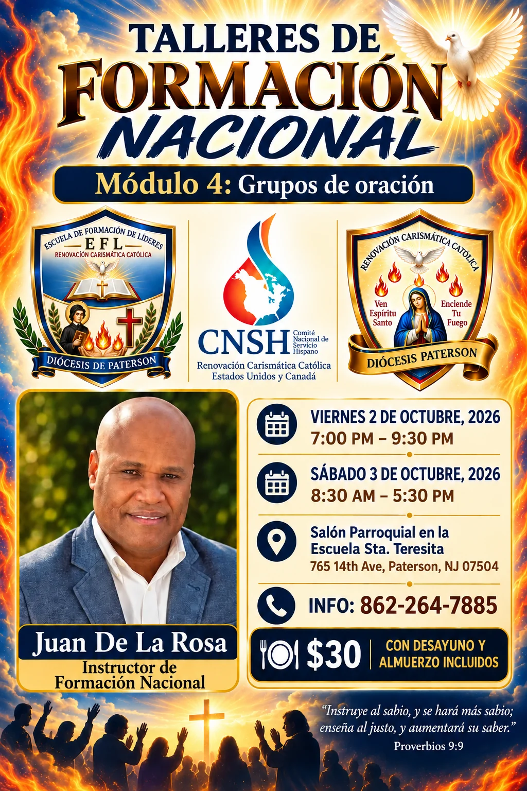
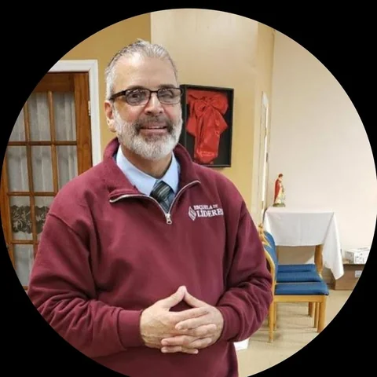

Escuela de Formación de Líderes
Formando servidores que lideran desde el servicio, como Jesús.
Formando servidores que lideran desde el servicio, como Jesús.
Módulo 4: Grupos de Oración — en comunión con el Comité Nacional de Servicio Hispano (CNSH).

Instructor Juan De La Rosa, Instructor de Formación Nacional
Viernes 2 de octubre, 2026 — 7:00 pm – 9:30 pm
Sábado 3 de octubre, 2026 — 8:30 am – 5:30 pm
Lugar Salón Parroquial, Escuela Sta. Teresita — 765 14th Ave, Paterson, NJ 07504
Donación $30 (incluye desayuno y almuerzo)
Además del taller nacional, la Escuela ofrece dos clases continuas cada semana — Alpha y ETA — cada una con su propio formador y su propio calendario de cursos.
Formador
José Cordero llega a la Escuela con una trayectoria de más de dos décadas dedicada a la formación en la fe. Tiene una Maestría en Estudios Religiosos y Pastoral por la Universidad de Fordham — universidad católica jesuita de Nueva York — y cuenta además con estudios en Educación y en Música. Formado también en el Instituto de Estudios Religiosos y Pastorales del Centro Católico Carismático de Nueva York, ha servido como catequista, predicador y músico en distintas parroquias del área metropolitana, y hoy acompaña procesos de formación de fe en la Diócesis de Rockville Centre. Es además educador de profesión, vinculado al sistema de escuelas públicas de Nueva York.

Formador
Para inscribirte en la Clase Alpha o la Clase ETA, comunícate directamente con la Escuela.
Escríbenos por WhatsAppLa Escuela de Formación de Líderes es el espacio formativo de la Renovación Carismática Católica de la Diócesis de Paterson dedicado a equipar, madurar y enviar servidores capaces de guiar a la comunidad carismática con sabiduría, fe y fidelidad a la Iglesia. No forma solo “organizadores” — forma discípulos que lideran desde el servicio, como Jesús.
“El que quiera ser grande entre ustedes, que sea su servidor.” — Mateo 20:26
La Escuela aborda tres dimensiones del servidor: formación humana (autoconocimiento, manejo de emociones, liderazgo relacional), formación espiritual (vida de oración, discernimiento, devoción mariana) y formación doctrinal (Biblia, Catecismo, historia de la Renovación Carismática, Doctrina Social de la Iglesia).
Programa oficial de la Escuela de Formación de Líderes.
Directora EFL
Subdirectora
Escríbenos por WhatsApp para inscripciones y dudas sobre los cursos
eflrcc@gmail.com